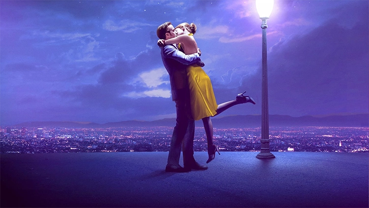
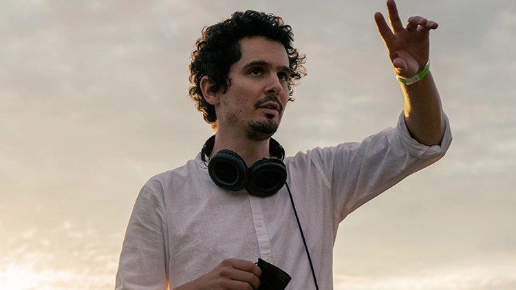

Biographie
Justin Hurwitz, né le 22 janvier 1985 à Los Angeles, en Californie,
est un compositeur de musiques de film et
scénariste américain. Il est connu pour ses
collaborations avec le réalisateur Damien Chazelle avec
qui, il a été colocataire lors de leurs années à Harvard.
Il a composé les musiques de plusieurs films comme Babylon,
Whiplash ou encore La La Land.
La La Land
- Genre
Musical et romance - Temps
2h 8m
- Réalisateur
Damien Chazelle - Compositeur
Justin Hurwitz
SYNOPSYS
Dans un café de Los Angeles, Mia sert des cafés. Son rêve est d’être actrice alors elle enchaîne les castings. De son côté, Sébastian, amateur de jazz, joue du piano dans les restaurants. Ils sont amenés à se croiser plusieurs fois, tomber amoureux, et réaliser leurs rêves.
Damien Chazelle est le réalisateur de La La Land. Il a notament réalisé Grand Piano et Le dernier exorcisme 2. Dans plusieurs de ses films, Justin Hurwitz y a produit les musiques.
Musiques
Une moitié des musiques du film sont chantés par les
acteurs Emma Stone et Ryan Gosling. Huit autres sont
instrumentales.
Les instruments utilisés viennent principalement du
jazz comme le piano, la trompette, le saxophone, la
batterie et la guitard. On y entend aussi de la flute.
ENGAGEMENT PARTY - LA LA LAND
Justin Hurwitz
Engagement Party est une version au piano de Another Day of Sun, une chanson connue du film.
CITY OF STARS - LA LA LAND
Justin Hurwitz ft. Ryan Gosling & Emma Stone
City of Stars recoit le prix de la meilleure chanson originale pour les Oscars de 2017.